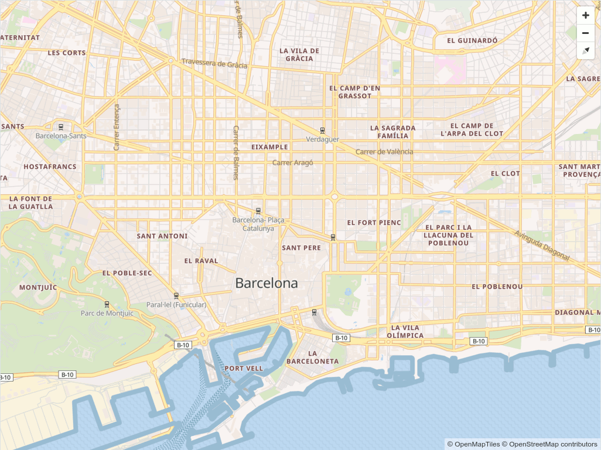
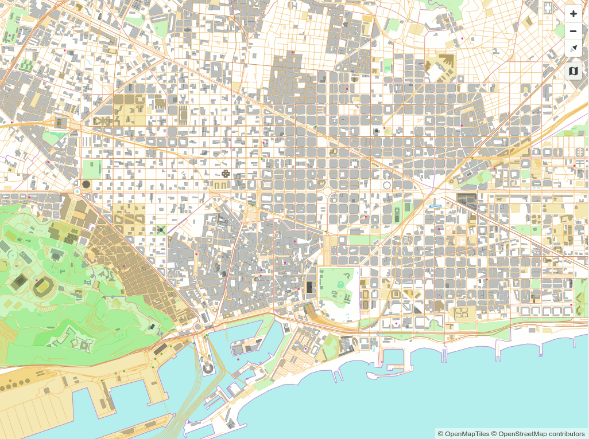

Cómo visualizar teselas vectoriales
Servidor web
Para ver las aplicaciones que desarrollaremos durante el taller necesitamos publicarlas mediante un servidor web.
En nuestro caso usaremos live-server, que permite servir los contenidos de un directorio y recargar la página
automáticamente cuando se modifica el contenido de algún fichero.
Para instalarlo, se usará el comando:
1 | sudo npm install -g live-server |
Para arrancarlo, basta con situarse en el directorio que queramos servir y ejecutar:
1 2 3 | mkdir taller-vt
cd taller-vt
live-server
|
Se abrirá el navegador por defecto con la dirección http://127.0.0.1:8080/ y se mostrará el contenido del directorio para poder navegar por él.
Deja la ventana del terminal abierta, y usa la combinación de teclas Ctrl + C para parar el servidor.
Hola Mundo
Vamos a crear un fichero barcelona.html.
Abre una nueva ventana de terminal (recuerda dejar el servidor activo) y ejecuta Visual Studio Code (o el editor que prefieras):
1 | code . |
Crea un fichero barcelona.html:
1 2 3 4 5 6 7 8 9 10 11 | <!DOCTYPE html> <html> <head> <meta charset="UTF-8"> <meta name="viewport" content="width=device-width, initial-scale=1"> <title>Mapa VT</title> </head> <body id="map"> 🖖 🌍 </body> </html> |
Recargar la página http://127.0.0.1:8080/ en el navegador. Se debería ver un "Hola mundo".
Hola Mapa
En este primer ejemplo crearemos un visor de mapas utilizando la librería de Mapbox GL JS. Tanto los datos procedente de teselas vectoriales ó vector tiles (VT) como el estilo para simbolizar los mismos se encuentran en la red.
Modificar el archivo barcelona.html para que contenga el siguiente código:
1 2 3 4 5 6 7 8 9 10 11 12 13 14 15 16 17 18 19 20 21 22 23 24 25 26 27 28 29 30 31 | <!DOCTYPE html> <html> <head> <meta charset="UTF-8"> <meta name="viewport" content="width=device-width, initial-scale=1"> <title>Mapa VT</title> <link rel='stylesheet' href='https://api.tiles.mapbox.com/mapbox-gl-js/v0.44.1/mapbox-gl.css' /> <script src='https://api.tiles.mapbox.com/mapbox-gl-js/v0.44.1/mapbox-gl.js'></script> <style> html, body { margin: 0; height: 100%; } </style> </head> <body id='map'> <script> var map = new mapboxgl.Map({ container: 'map', // id del elemento HTML que contendrá el mapa style: 'https://openmaptiles.github.io/osm-bright-gl-style/style-cdn.json', // Ubicación del estilo center: [2.175, 41.39], // Ubicación inicial zoom: 13, // Zoom inicial bearing: -45, // Ángulo de rotación inicial hash: true // Permite ir guardando la posición del mapa en la URL }); // Agrega controles de navegación (zoom, rotación) al mapa: map.addControl(new mapboxgl.NavigationControl()); </script> </body> </html> |
 Resultado visor simple
Inspector de datos
El control mapbox-gl-inspect permite ver todos los elementos de un VT y también permite pasar el cursor sobre los elementos para ver sus propiedades.
Agregar el código de la librería, e instanciar el control tras crear el mapa:
1 2 3 4 5 6 7 8 9 10 11 12 13 14 15 16 17 18 19 20 21 22 23 24 25 26 27 28 29 30 31 32 33 34 35 36 | <!DOCTYPE html> <html> <head> <meta charset="UTF-8"> <meta name="viewport" content="width=device-width, initial-scale=1"> <title>Mapa VT</title> <link rel='stylesheet' href='https://api.tiles.mapbox.com/mapbox-gl-js/v0.44.1/mapbox-gl.css' /> <script src='https://api.tiles.mapbox.com/mapbox-gl-js/v0.44.1/mapbox-gl.js'></script> <link href='https://mapbox-gl-inspect.lukasmartinelli.ch/dist/mapbox-gl-inspect.css' rel='stylesheet' /> <script src='https://mapbox-gl-inspect.lukasmartinelli.ch/dist/mapbox-gl-inspect.min.js'></script> <style> html, body { margin: 0; height: 100%; } </style> </head> <body id='map'> <script> var map = new mapboxgl.Map({ container: 'map', // id del elemento HTML que contendrá el mapa style: 'https://openmaptiles.github.io/osm-bright-gl-style/style-cdn.json', // Ubicación del estilo center: [2.175, 41.39], // Ubicación inicial zoom: 13, // Zoom inicial bearing: -45, // Ángulo de rotación inicial hash: true // Permite ir guardando la posición del mapa en la URL }); // Agrega controles de navegación (zoom, rotación) al mapa: map.addControl(new mapboxgl.NavigationControl()); // Agregar el control de inspección map.addControl(new MapboxInspect()); </script> </body> </html> |
Se recargará la página en el navegador con un nuevo botón que permite la "visión de rayos X" sobre los datos.
 Resultado visor simple
Contenido de un fichero de estilo
Como vemos, el visor es muy sencillo, y parece que toda la "magia" se esconde en el fichero de estilo tras la URL
https://openmaptiles.github.io/osm-bright-gl-style/style-cdn.json.
Si lo abrimos, es un objeto JSON bastante complejo, pero si nos fijamos en las propiedades de primer nivel, son pocas. Las principales:
1 2 3 4 5 6 7 8 | { "version": 8, "name": "OSM Bright", "sprite": "https://openmaptiles.github.io/osm-bright-gl-style/sprite", "glyphs": "https://free.tilehosting.com/fonts/{fontstack}/{range}.pbf?key=RiS4gsgZPZqeeMlIyxFo", "sources": {...}, "layers": [...] } |
versiones obligatoria y siempre es 8.namees opcional pero conveniente, es una etiqueta para mostrar el nombre del estilo.spriteindica de dónde obtener el conjunto de iconos necesarios para simbolizar.glyphs: indica de dónde obtener el conjunto de tipografías necesarios para simbolizar.sources: los orígenes de datos.layers: las reglas de simbolización. El orden es importante: Se van dibujando de la primera (que queda por debajo) a la última (que queda por encima). Así, la primera regla suele ser el color de fondo del mapa, y las últimas suelen ser la toponimia o los PoIs.
En los próximos capítulos veremos en detalle cómo usar sources, layers, sprites y glyphs.
Habitualmente también se usan otras propiedades para indicar la vista inicial del mapa. Por ejemplo:
1 2 3 4 5 6 7 | { ... "center": [2.15, 41.39], "zoom": 12, "bearing": -45, "pitch": 0 } |
center: Coordenadas iniciales donde centrar el mapa [lon, lat]zoom: Zoom inicial del mapabearing: Rotación inicial del mapa (en grados)pitch: Inclinación inicial del mapa para verlo en perspectiva (de 0 a 60 grados)
Tip
La especificación completa del fichero de estilo es parte de la documentación on-line de Mapbox GL JS.